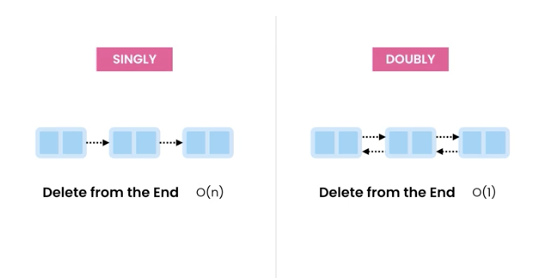

BIG 0 (Omnicron) Notation
Types of linked lists

Difference between Arrays vs Linked Lists (Java)
In terms of Space
- Static arrays have a fixed size
- Dynamic arrays grow by 50-100% (but can waste memory).
- Linked lists don't waste memory (but can use more memory)
- Use arrays if number of items to store (roughly) is known.
Types of Linked Lists